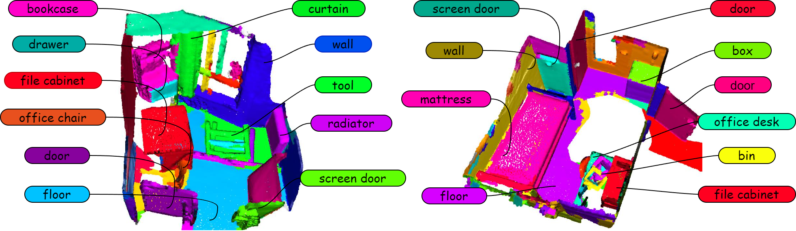
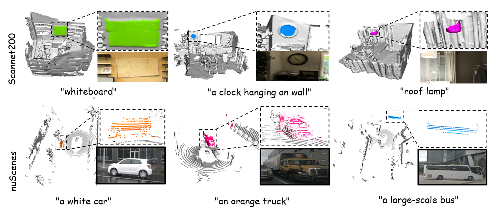

Qualitative Results
Qualitative results of our method on open-world

Qualitative results of our methods with text queries


Open-vocabulary 3D scene understanding presents a significant challenge in the field. Recent advancements have sought to transfer knowledge embedded in vision- language models from the 2D domain to 3D domain. However, these approaches often require learning prior knowledge from specific 3D scene datasets, which limits their applicability in open-world scenarios. The Segment Anything Model (SAM) has demonstrated remarkable zero-shot segmentation capabilities, prompting us to investigate its potential for comprehending 3D scenes without the need for training. In this paper, we introduce OV-SAM3D, a universal framework for open-vocabulary 3D scene understanding. This framework is designed to perform understanding tasks for any 3D scene without requiring prior knowledge of the scene. Specifically, our method is composed of two key sub-modules: First, we initiate the process by generating superpoints as the initial 3D prompts and refine these prompts using segment masks derived from SAM. Moreover, we then integrate a specially designed overlapping score table with open tags from the Recognize Anything Model (RAM) to produce final 3D instances with open-world label. Empirical evaluations conducted on the ScanNet200 and nuScenes datasets demonstrate that our approach surpasses existing open-vocabulary methods in unknown open-world environments.


@article{tai2024ovsam3d,
title={Open-Vocabulary SAM3D: Understand Any 3D Scene},
author={Hanchen Tai and Qingdong He and Jiangning Zhang and Yijie Qian and Zhenyu Zhang and Xiaobin Hu and Yabiao Wang and Yong Liu},
journal={arXiv preprint },
year={2024},
}